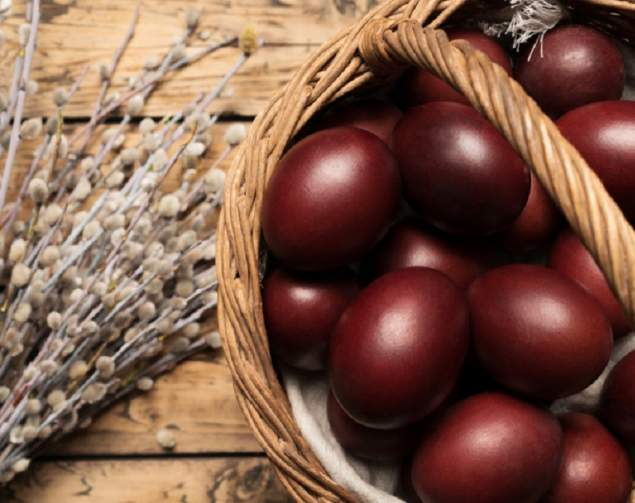
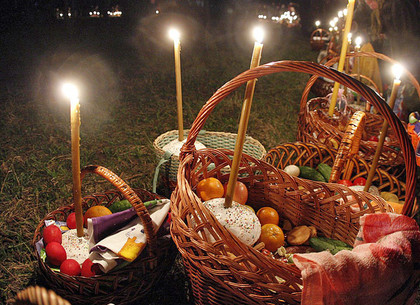

TRADIŢII DE PAȘTE ÎN REPUBLICA MOLDOVA
Paştele reprezintă una dintre cele mai importante sărbători anuale creştine care sărbătoreşte evenimentul fundamental al creştinismului,
Învierea lui Iisus Hristos, considerat Fiul lui Dumnezeu în religiile creştine, în a treia zi după răstignirea Sa din Vinerea Mare.
Săptămâna Patimilor este săptămâna dinaintea Paştelui. Îi pregăteşte pe creştini pentru Învierea Domnului nostru Iisus Hristos. Termenul de Paşte a fost dat de primii creştini sărbătoririi anuale a Cinei celei de taină,
care avea loc în seara zilei de 13 Nisan sau în joia dinaintea Duminicii Învierii.
Aceasta era o masă rituală care imita Cina Domnească la care au participat apostolii şi Iisus Hristos, fiind însoţită de Sfânta Împărtăşanie.
LEGENDA OUĂLOR ROȘII
Folclorul conservă mai multe legende care explică de ce se înrosesc ouăle de Paști și de ce ele au devenit simbolul sărbătorii Învierii Domnului. Legendele creștine leagă simbolul ouălelor roșii de patimile lui Iisus.
Răstignirea și Învierea reprezintă reînvierea naturii primăvara și reluarea ciclurilor vieții. Culoarea roșie este simbol al focului purificator.

Cea mai răspândită legendă povestește că Maica Domnului, care venise să-și plângă fiul răstignit, a pus coșul cu ouă lângă cruce și acestea
s-au înroșit de la sângele care picura din rănile lui Iisus. Domnul, văzând că ouăle s-au înroșit, a spus celor de față: "De acum înainte să faceți și voi ouă roșii și împestrițate intru aducere aminte de răstignirea mea, după
cum am făcut și eu astăzi".
Mai există însă și o altă legendă care explică roșul ouălor. Se spune că vestea Învierii lui Iisus a fost primită de unii cu mare neîncredere. O precupeață care vindea ouă în piață ar fi zis, sceptică și răutăcioasă:
"Voi crede că a înviat din morți numai când ouăle astea se vor înroși!". Din senin, ouăle au căpătat, spre bulversarea totală a femeii, culoarea roșie.
Din marţea Săptămânii Mari, dar mai ales în zilele de joi, vineri şi sâmbătă, în toate gospodăriile se vopsesc ouăle roşii de Paşte. Iar în Duminica Paştelui trebuie să te speli cu apă în care se află un ou roşu şi câteva monede.
Oul roşu semnifică sănătatea, iar banii - bogăţia. La masă se ciocnesc ouăle roşii.
POSTUL
Fiecare creștin trebuie în perioada postului să se abțină de la consumul bucatelor din carne și lactate și să se îngrijească de suflet prin fapte de dăruire și milostenie. În același timp, postul este și o perioadă de luptă cu sine,
cu capriciile și obișnuințele,
fapt pentru care doar cei ce reușesc să le înfrunte, pot primi sfânta împărtășanie. Paștele este precedat de sărbătoarea Bunei-Vestiri, care se serbează la 7 aprilie, este ziua în care i se vestește Maicii Domnului că-l va naște pe Iisus Hristos. În această zi Biserica Ortodoxă dă dezlegare la pește.
SFINȚIREA BUCATELOR
În noaptea învierii, credincioşii merg la Biserică pentru slujba religioasă și sfințirea bucatelor de Paști. În coșul de Paști gospodinele pun ouă roșii, pască, bucate din carne, caș etc. Alimentele aduse la biserică în această
noapte sunt un simbol al reînvierii și al belșugului.
În tradiția strămoșească era primit, ca întorcându-se de la biserică să păstreze focul aprins, aducând lumina în casă și gospodărie.
 Ajunși acasă, înainte de a se așeza la masă creștinii se spală cu apă proaspătă în care se pun un ou roșu, unul alb și o monedă de argint „ca să fie curați,
sănătoși, rumeni și bogați anul împrejur”.
Așezându-se la masă creștinii mănâncă din cele sfințite, nu înainte de a se saluta cu expresia „Hristos a Înviat!”, răspunsul fiind „Adevărat a Înviat!”. Masa de Paști se caracterizează prin bogăția bucatelor, ouă vopsite, pască etc.
Tradițional, de Paști se servește mielul copt. Sacrificarea mielului la această sărbătoare este preluată din practici precreștine, pentru a marca începutul perioadei de renovare a timpului. Mielul tăiat la sărbătoarea Paștelui, este
identificat simbolic de creștini cu Iisus Hristos, prin care este reactualizată moartea sa fizică.
Pe vremuri la Paște, îndeosebi a doua și a treia zi, în multe sate se organizau jocuri, hora satului, unde veneau sătenii de toate vârstele. Tradițional în zilele de Paști la moldoveni era „datul în scrânciob”.
Drept plată pentru această distracție erau ouăle roșii. Se credea că cine se dădea în scrânciob, aceluia îi vor crește roadele înalte și-i va merge bine tot anul. A doua zi de Paști se obișnuiește ca finii să se ducă la nași cu daruri:
pască, cozonac, ouă roșii, dulciuri etc.
În prezent, multe din tradițiile și obiceiurile strămoșești de Paște sunt valorificate atât în familiile moldovenilor cât și în cadrul diverselor manifestații culturale, etnofolclorice.